データサイエンス実践 Ch4 データの数値化
資料
データの数値化
データを可視化することで, データの大まかな傾向はつかめます. しかし, グラフではデータの特徴を大まかにしか捉えることができません. データの特徴を具体的に述べるには, それを数値にする必要があります.
例えば, 以下のヒストグラム (データ) を見てみましょう.
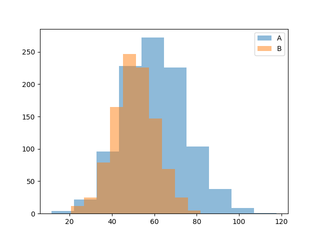
ヒストグラム B と比較して, A はデータの中心が右にあり, データの散らばりが大きいように見えます. しかし, A の中心が B よりどの程度右にあり, A の散らばりがどの程度大きいのかは, グラフからは読み取れません. このように, グラフによる比較では, 抽象的な印象しか語ることができないため, データの中心や, 散らばりを数値で表すことが必要です.
数値化の対象となる量は, データの種類や分析の目的によって様々ですが, 大まかに以下のような分類が可能です.
データの数値化
| データの数 | データの種類 | 求める数値 | 目的 |
|---|---|---|---|
| 1 | 量的変数 | 基本統計量 | データの特徴を知る |
| 2 | 量的変数 | ピアソンの積率相関係数 | データの関係を知る |
| 2 | 質的変数 | ピアソンの \chi^2 統計量 スピアマンの順位相関係数 |
データの関係を知る |
| 3 以上 | 次元削減, 多変量解析など多数 |
基本統計量
量的データを客観的に評価するために, 分布の特徴を数値で表したものを基本統計量 (代表値)といいます.
- 基本統計量
| 名称 | 概要 |
|---|---|
| 平均 (Mean) | データの平均値. 量的データの分布の中心傾向を示す |
| 中央値 (Median) | データの順位における中央. 量的データの分布の中心傾向を示す |
| 最頻値 (Mode) | 最も度数の多い値. 量的データの分布の中心傾向を示す |
| 標準偏差 (Standard Deviation) | データのばらつき具合を示す. |
| 分散 (Variance) | データのばらつき具合を示す. |
| 尖度 (Kurtosis) | 外れ値の度合い |
| 歪度 (Skewness) | 分布の歪み |
Python では, pandas の DataFrame に対して, .describe() メソッドを適用すると, データ数 (count), 平均値 (mean), 中央値 (50%), 四分位数 (25%,75%), 標準偏差 (std), 最大値 (max), 最小値 (min) などが求まります.
df = pd.read_csv('data/histogram_A_B_data.csv')
print(df.describe())
"""
python quantify.py
Histogram_A Histogram_B
count 1000.000000 1000.000000
mean 60.289981 50.708362
std 14.688239 9.974544
min 11.380990 20.596114
25% 50.286145 43.937583
50% 60.379509 50.630771
75% 69.719158 57.288822
max 117.790972 81.931076
"""それぞれの統計量の意味を順番に見ていきましょう.
中心を表す基本統計量
ヒストグラムにおける峰のある位置, 分布の中心がどこにあるかを表す統計量には, 平均値, 中央値, 最頻値などがあります. この 3 つは, いずれも分布の中心を表す統計量ですが, 分布の歪みによって意味が異なり, 使い分けが必要となります.
算術平均 (mean)
分布の中心を表す統計量としてもっとも一般的なものに, 平均値があります. しかし, 一口に平均といっても, いくつかの種類があるので注意しましょう. 分布の中心を表す場合に用いられる平均は基本的に算術平均ですが, ここでは異なる定義の平均として, 幾何平均と調和平均も紹介します.
一般に「平均」といったときにイメージされる, すべてのデータの和をデータの個数で割った値を算術平均といいます.
算術平均は対象とするデータを足し合わせることによって基準となる値が算出される場合に使用します.
n 個の観測値 x_1, x_2, ..., x_n のとき, 平均値 \bar{x} は
\bar{x} = \frac{1}{n} (x_1 + ... + x_n) = \frac{1}{n} \sum_{i=1}^{n} x_i
例: 165, 171, 189 の算術平均は
\bar{x} = \frac{1}{3} (165 + 171 + 189) = 175
となります.
pandas で平均を求めるには, .mean() を利用します.
df = pd.DataFrame({'x':[165,171,189]})
print(df['x'].mean()) #>>>175幾何平均 (geometric mean)
すべてのデータを乗じて, データの数で根を取った値を幾何平均といいます. 増加率, 減少率など対象とするデータを相互に乗じることによって基準となる値が算出される場合に使用します.
n 個の観測値 x_1, x_2, ..., x_n のとき, 幾何平均 x_G は x_G = \sqrt[n]{x_1 \cdot x_2 \cdot ... \cdot x_n} = \left(\prod_{i=1}^{n} x_i\right)^{\frac{1}{n}}
例: 各年の売上と, その前年比 (前年の売上に対する倍率) が以下のように表されるとき, 売上が平均で何 % ずつ伸びているかを考えます.
| 年度 | 売上 | 前年比 |
|---|---|---|
| 1 | 300 | |
| 2 | 350 | 117% |
| 3 | 600 | 171% |
| 4 | 1000 | 167% |
このとき算術平均を用いると, \text{算術平均} = \frac{1.17 + 1.71 + 1.67}{3} \approx 1.52 となり,
300 \cdot 1.52^3 \approx 1054
平均的な伸び率を 3 回乗じても 4 年目の売上の値になりません. これは, 毎年度の値に前年比を掛けることで次の年度の値が求まるのに対して, 算術平均は毎年度足す操作をした場合の平均値を求めているからです.
そこで, 幾何平均を求めてみると,
\text{幾何平均} = \sqrt[3]{\frac{350}{300} \cdot \frac{600}{350} \cdot \frac{1000}{600}} = \sqrt[3]{\frac{1000}{300}} \approx 1.494, \\ 300 \cdot 1.494^3 \approx 1000 となり, 4 年目の値と一致します.
調和平均 (harmonic mean)
先ほどの幾何平均が掛け算の平均値だったのに対して, 割り算の平均値を調和平均といい, 速度などの定義に割り算が含まれている計算で用います.
調和平均は, 別の値を対象とするデータで除して足し合わせることによって基準となる値が算出される場合に使用します.
n 個の観測値 x_1, x_2, ..., x_n のとき, 調和平均 x_H は \frac{1}{x_H} = \frac{1}{n} \left( \frac{1}{x_1} + ... + \frac{1}{x_n} \right) \\ \iff \\ x_H = \frac{n}{\frac{1}{x_1} + ... + \frac{1}{x_n}} = \frac{n}{\sum_{i=1}^{n} \frac{1}{x_i}}
例: 平均速度
100 km の道のりを行きは車 (60 km/h), 帰りは自転車 (30 km/h) で移動した場合, 算術平均は 45 km/h となります. しかし, かかった時間は \frac{\text{距離}}{\text{速度}} で求まるので, 車は \frac{100}{60}, 自転車は \frac{100}{30} となり, 速度は \frac{\text{距離}}{\text{時間}} で求まるので, 平均速度は
\frac{200}{\frac{100}{60} + \frac{100}{30}} = \frac{2}{\frac{1}{60} + \frac{1}{30}} = 40
となり, 算術平均の 45 km/h とは一致しません. 右辺の \frac{2}{\frac{1}{60} + \frac{1}{30}} が, 60 と 30 の調和平均です.
中央値 (median)
中心を表す統計量として, データを昇順に並び替えて, そのちょうど真ん中の数を表す中央値もよく利用されます.
n 個の観測値を大きさの順に並べ替えて x_1, x_2, ..., x_n としたとき, 中央値 \tilde{x} は
\tilde{x} = \begin{cases} x_{\frac{n+1}{2}}, ~~& n \text{ が奇数のとき} \\ \frac{x_{ \frac{n}{2}} + x_{\frac{n}{2} + 1 }}{2}, ~~ & n \text{ が偶数のとき} \end{cases}
例: 観測値が 3, 4, 7, 9, 11, 12, 15 (n = 7) のとき, 中央値は \tilde{x} = x_{\frac{n+1}{2}} = x_{\frac{8}{2}} = x_4 = 9
となります.
また, 観測値が 4, 5, 6, 10, 14, 17 のように偶数個の場合は \tilde{x} = \frac{x_{ \frac{n}{2}} + x_{\frac{n}{2} + 1 }}{2} = \frac{6 + 10}{2} = 8
となります.
pandas では, 中央値は .median() で求めることができます.
df = pd.DataFrame({'x':[3,4,7,9,11,12,15]})
print(df['x'].median()) #9.0
df = pd.DataFrame({'x':[4,5,6,10,14,17]})
print(df['x'].median()) #8.0pandas を使わずに実装するときは, 添字を 1 つずらして読み替えます. 式の添字は 1 から始まりますが, Python のリストの添字は 0 から始まるためです. 読み替えると, 奇数のときの x_{\frac{n+1}{2}} は s[(n - 1) // 2], 偶数のときの x_{\frac{n}{2}} と x_{\frac{n}{2} + 1} は s[n // 2 - 1] と s[n // 2] になります. 奇数のとき (n - 1) // 2 と n // 2 は同じ位置を指すので, 場合分けをせずに次の 1 つの式で書けます.
def median(xs):
s = sorted(xs)
n = len(s)
return (s[(n - 1) // 2] + s[n // 2]) / 2
print(median([3, 4, 7, 9, 11, 12, 15])) # 9.0
print(median([4, 5, 6, 10, 14, 17])) # 8.0次の四分位数の説明でも, 位置は 0 から数えます.
四分位数 (quartiles)
中央値: データを小さい順に並べたときに観測数が 50% となる点
四分位数: データを小さい順に並べたときに, 観測数が 25%, 50%, 75% となる点. 第一四分位数 (25%), 第二四分位数 (50%), 第三四分位数 (75%)
四分位範囲: 第三四分位数から第一四分位数を引いた値 (第一四分位数から第三四分位数までの幅)
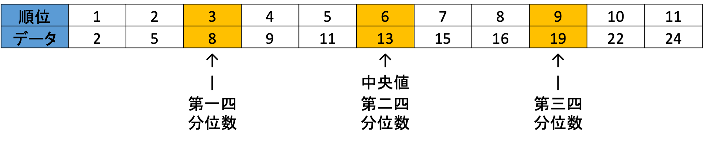
pandas で四分位数を求めるには, .quantile(q=%点の数値,interpolation='nearest') を使います.
interpolation (補間) は, 値がインデックス i と j の間にある場合に補間する方法を指定する引数で, 以下のような設定が可能です.
.quantile() では, データの最大インデックス (データ数 - 1) に q を掛けた位置の値を求めます. 例えば xs=[2,5,8,9,11,13,15,16,19,22,24] の 25% 点は, 10*0.25=2.5 となり xs[2.5] となるような点を求めます.
| 引数 | 効果 | 25% 点の場合の計算 |
|---|---|---|
'linear' |
線形補間 | xs[2] + (xs[3] - xs[2]) * 0.5 = 8.5 |
'lower' |
小さい方 | xs[2] = 8 |
'higher' |
大きい方 | xs[3] = 9 |
'midpoint' |
中間 | (xs[2] + xs[3])/2 = 8.5 |
'nearest' |
近い方 | xs[2] = 8 |
xs = [2,5,8,9,11,13,15,16,19,22,24]
df = pd.DataFrame({'x':xs})
print('25%点:',df['x'].quantile(q=0.25, interpolation='linear'))
print('25%点:',df['x'].quantile(q=0.25, interpolation='nearest'))
print('50%点:',df['x'].quantile(q=0.5, interpolation='nearest'))
print('75%点:',df['x'].quantile(q=0.75, interpolation='nearest'))
"""
25%点: 8.5
25%点: 8
50%点: 13
75%点: 19
"""最頻値 (mode)
中心を表す統計量の最後は, 最も頻繁にあらわれる値を表す最頻値です. 量的データを度数分布表にまとめた場合は, 最も度数の高い階級を指します.
最頻値の意味は, データの種類によって異なります. (※ 質的データの平均値などは定義できません)
質的データの場合
- 最大度数のカテゴリー
量的データの場合
最大度数の階級 = 最頻階級 (modal class)
長さや気温など同じ間隔で値が存在するもの
pandas で最頻値を求める方法はいろいろありますが, 単純に同じデータが最も多い値を探す場合には .mode() が利用できます. .mode() は最頻値が複数ある場合に対応するために Series を返すので, [0] で最初の値を取っています.
df = pd.DataFrame({'x':['A','A','B','C']})
print(df['x'].mode()[0]) # A
df = pd.DataFrame({'x':[1,3,2,4,5,3]})
print(df['x'].mode()[0]) # 3しかし, 連続値のデータでは同じ値がほとんど現れないため, この方法では最頻階級を求められません. 区間ごとの度数から最頻階級を求めるには, value_counts() の引数 bins で区間を指定します.
# ランダムな0から100までのデータの生成
np.random.seed(0) # 再現性のためにシードを設定
df = pd.DataFrame({'x':np.random.randint(0, 101, size=1000)})
print(df)
#10区切りで度数を求める
bins = [0,10,20,30,40,50,60,70,80,90,100]
freq = df['x'].value_counts(bins =bins, sort=False)
print(freq)
#最大の度数のindexを取得
print(freq.idxmax())
"""
x
0 44
1 47
2 64
3 67
4 67
.. ..
995 79
996 41
997 17
998 80
999 43
[1000 rows x 1 columns]
(-0.001, 10.0] 121
(10.0, 20.0] 87
(20.0, 30.0] 96
(30.0, 40.0] 107
(40.0, 50.0] 94
(50.0, 60.0] 92
(60.0, 70.0] 97
(70.0, 80.0] 103
(80.0, 90.0] 103
(90.0, 100.0] 100
Name: count, dtype: int64
(-0.001, 10.0]
"""中心を表す代表値の使い分け
中心を表す基本統計量である, 算術平均, 中央値, 最頻値は, ヒストグラムが単峰で左右対称である場合一致します. したがってヒストグラムを作成して単峰で左右対称である場合には, どの値を利用しても大きな違いは生まれません.
一方で, 分布が歪んでいる場合には, それぞれの統計量の値が変わります. 分布が歪んでいる場合には, 算術平均よりも最頻値や中央値のほうが, 目的に合った中心を表すことがあります.
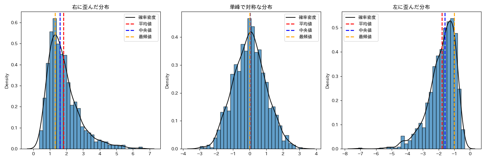
例えば, 以下の図は, 平成 21 年の国民生活基礎調査による, 世帯ごとの所得の分布を表したヒストグラムです.
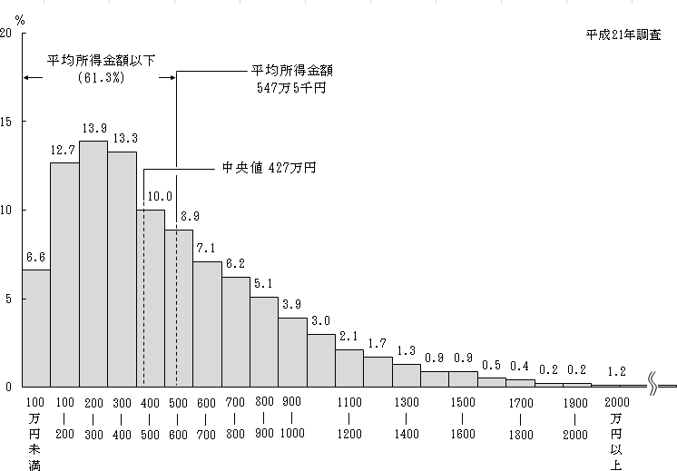
この図では, 分布が大きく右に歪んでいるため平均値, 中央値, 最頻値の値が異なっています. それぞれの値が何を意味するのかを考えてみましょう.
- 平均値: 547 万円
- 全世帯の所得を足して世帯数で割った値 (仮に全世帯が平等に受け取るならこの金額)
- 中央値: 427 万円
- 所得の低い順に並べたときに真ん中の世帯の所得 (これ以上なら真ん中より上の所得)
- 最頻値: 250 万円
- 最も度数の多い階級 (街で適当に声をかけるとこれくらいである可能性が高い)
このようなときに, 世間一般の人の感覚を表す値として平均値を利用することは適当ではないでしょう. 平均値は, 分布が歪んでいる場合には少数のデータに大きく引っ張られるため全体の傾向を表せない場合があります.
例えば, 年収 300 万円の人が 100 人いる村に年収 50 億円の野球選手が引っ越してくると, 平均年収は約 5250 万円, 中央値と最頻値は 300 万円になります.
統計量はそれぞれの意味を把握したうえで, 目的に応じて使い分けるようにしましょう.
この節に対応する演習は, 章末のExercise DSP4-1です.
データの広がりを表す統計量
分布の中心がどこかという点のほかに, データがどのように広がっているかもデータの特徴を記述するうえでは重要です.
データの広がり具合を散布度といいますが, 散布度を表す統計量として代表的なものに分散と標準偏差があります.
データの散らばり具合を数値化するために, どのように考えるかを順を追って見ましょう. データがどの程度散らばっているかを考える際の基準の一つが算術平均 \bar{x} です. 各データ x_i が, データの算術平均からどの程度離れているのかを考えてみましょう.
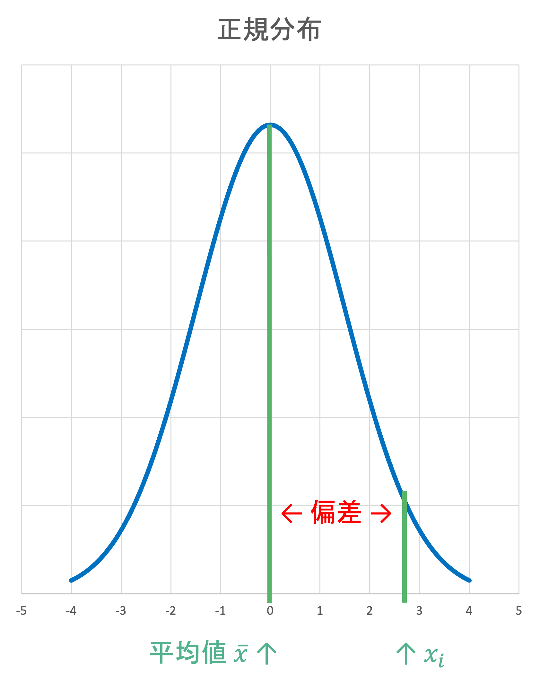
- 偏差 (deviation)
\text{観測値} x_i \text{と平均} \bar{x} \text{の差} = x_i - \bar{x}
この偏差がデータ全体でどのくらい大きいのかを考えるために偏差の平均を取ります. ただし, 平均からの差は, すべて足し合わせると 0 になるため, 絶対値を取ります. これを平均偏差と呼びます.
- 平均偏差 (mean deviation)
各観測値が平均からどれだけ離れているかの絶対値平均
d = \frac{1}{n} \sum_{i=1}^{n} |x_i - \bar{x}|
絶対値は式の変形で扱いにくいので, 絶対値の代わりに偏差を 2 乗して平均します (値は大きくなります). これが分散です.
- 分散 (variance)
各観測値の偏差の 2 乗の平均
S^2 = \frac{1}{n} \sum_{i=1}^{n} (x_i - \bar{x})^2
2 乗すると値が大きくなるので, 単位をもとのデータに合わせるために分散の平方根をとります (例えば, x_i の単位が kg のとき, S^2 の単位は \text{kg}^2 になります). これを標準偏差といいます.
- 標準偏差 (standard deviation)
S = \sqrt{S^2}
例えば, データが [9,6,12,18,10] の場合を考えてみましょう. 何を計算しているのか, イメージしながら順番に計算していきましょう.
data = [9,6,12,18,10]
df = pd.DataFrame({'data':data})
print(df)
"""
data
0 9
1 6
2 12
3 18
4 10
"""まずは平均からの差 (偏差) を求めてみます.
#平均
barx = df['data'].mean()
print(barx) #11.0
# 偏差
df['dev'] = df['data'] - barx
print(df)
"""
data dev
0 9 -2.0
1 6 -5.0
2 12 1.0
3 18 7.0
4 10 -1.0
"""次に偏差の 2 乗とその平均 (分散) を求めます.
#偏差の2乗
df['dev2'] = df['dev'] * df['dev']
print(df)
"""
data dev dev2
0 9 -2.0 4.0
1 6 -5.0 25.0
2 12 1.0 1.0
3 18 7.0 49.0
4 10 -1.0 1.0
"""
#偏差の2乗の平均(分散)
print(df['dev2'].mean()) #16.0最後に分散の平方根をとって, 標準偏差を求めます.
#偏差の2乗の平均の平方根(標準偏差)
print(np.sqrt(df['dev2'].mean())) #4.0計算から, このデータの分散は 16, 標準偏差は 4 であることが分かりました.
pandas では, 分散は .var(ddof=0), 標準偏差は .std(ddof=0) で求めることができます.
print('分散:',df['data'].var(ddof=0)) #16.0
print('標準偏差:',df['data'].std(ddof=0)) #4.0- 不偏分散, 不偏標準偏差
.var() と .std() における引数 ddof=0 とはなんでしょうか. これは, 分散を求める際の分母の値から引く数を表しています (引いた後の値を自由度といいます).
デフォルトの値は ddof=1 で,
\frac{1}{n-1} \sum_{i=1}^{n} (x_i - \bar{x})^2 を求めています.
このような分母が n-1 となっている分散を不偏分散といいます. 一方で, これまで計算してきた値を標本分散といいます.
不偏分散の意味は統計学の講義で扱います. ここでは, 一口に分散や標準偏差といっても, 細かくは標本分散, 不偏分散, 母分散などの異なる概念があることに注意しましょう. 特にプログラムで分散や標準偏差を求めるときは, どの値を計算しているのかを確かめましょう. ネット上の記事などにおいても混同していることが多いので, 実際に自分で計算して確かめることをおすすめします.
例えば, pandas における describe() で表示される std は不偏標準偏差であり, std(ddof=0) の値とは異なります.
print(df['data'].describe())
"""
count 5.000000
mean 11.000000
std 4.472136
min 6.000000
25% 9.000000
50% 10.000000
75% 12.000000
max 18.000000
Name: data, dtype: float64
"""この節に対応する演習は, 章末のExercise DSP4-1です.
相関
基本統計量は, 一つの観測項目に対する数値化の手法でしたが, 可視化における散布図のように, 2 つの観測項目間の関係を数値で表すことが可能です.
第3章の散布図で扱った事例についてもう一度考えてみましょう.
AI Python
0 34 27
1 40 26
2 59 28
3 46 29
4 36 29
.. .. ...
255 58 83
256 69 87
257 59 82
258 62 84
259 59 87df = pd.read_csv('data/scatter.csv')
#散布図のx軸を指定
x_column = 'AI'
#散布図のy軸を指定
y_column = 'Python'
x_value = df[x_column]
y_value = df[y_column]
plt.scatter(x_value, y_value)
plt.ylabel(y_column)
plt.xlabel(x_column)
plt.show()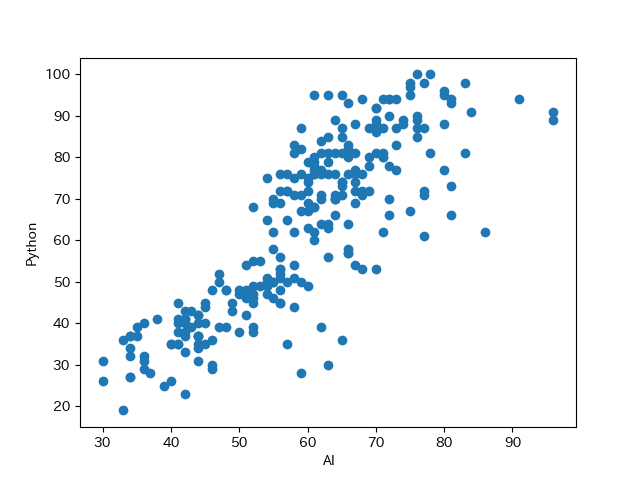
Google トレンドの AI と Python の検索数から散布図を作成すると, AI の検索数が増えるにつれて Python の検索数が増えていることが分かります.
相関関係
このような関係を相関関係 (correlation)といい, 2 つの変数の間に直線関係に近い傾向が見られるときに「相関関係がある」といいます.
点の並びが直線的であるほど強い相関, 直線から散らばっているほど弱い相関といいます.
また,
- 一方が増加したとき, 他方が増加する関係を 正の相関関係
- 一方が増加したとき, 他方が減少する関係を 負の相関関係
といいます.
このような相関関係があるかないかは, 散布図を見ただけである程度判断が可能ですが, 相関がある/ない, 強い/弱いというのは抽象的な表現なので, 厳密に判断する場合にはそれらを数値として表す必要があります.
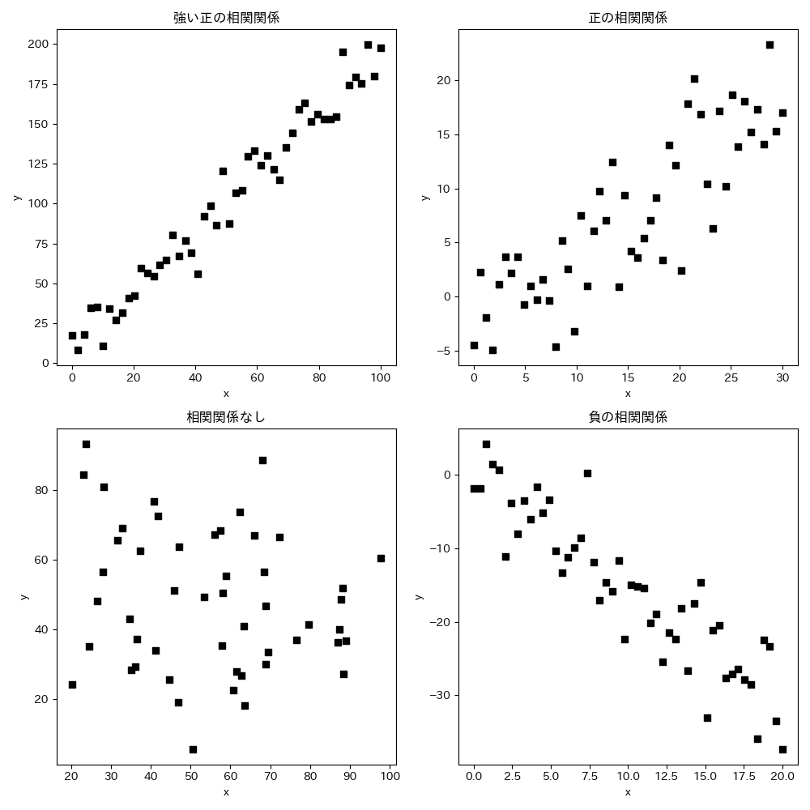
相関関係を数値化したものを相関係数 (correlation coefficient)といい, データの尺度に応じて, 以下のような種類が存在します.
| 尺度 | 係数 |
|---|---|
| 量的変数 \times 量的変数 | ピアソンの積率相関係数 |
| 順位尺度 \times 順位尺度 | スピアマンの順位相関係数 |
| 名義尺度 \times 質的変数 | ピアソンの \chi^2 統計量 |
ピアソンの積率相関係数
2 つの量的変数に利用される相関係数をピアソンの積率相関係数 (product moment correlation coefficient)といいます.
データが (x_1, y_1), (x_2, y_2), ..., (x_n, y_n) のとき,
\begin{align*} r_{xy} &= \frac{\sum (x_i - \bar{x})(y_i - \bar{y}) / n}{\sqrt{\sum (x_i - \bar{x})^2 / n} \sqrt{\sum (y_i - \bar{y})^2 / n}} \\ & = \frac{\sum (x_i - \bar{x})(y_i - \bar{y})}{\sqrt{\sum (x_i - \bar{x})^2} \sqrt{\sum (y_i - \bar{y})^2}} \\ &= \frac{s_{xy}}{S_x S_y} \end{align*}
なお, \quad s_{xy} = \frac{1}{n} \sum (x_i - \bar{x})(y_i - \bar{y}) を x と y の共分散といい, 相関係数は \frac{x \text{と} y \text{の共分散}}{x \text{の標準偏差} \times y \text{の標準偏差}} の形で表されます.
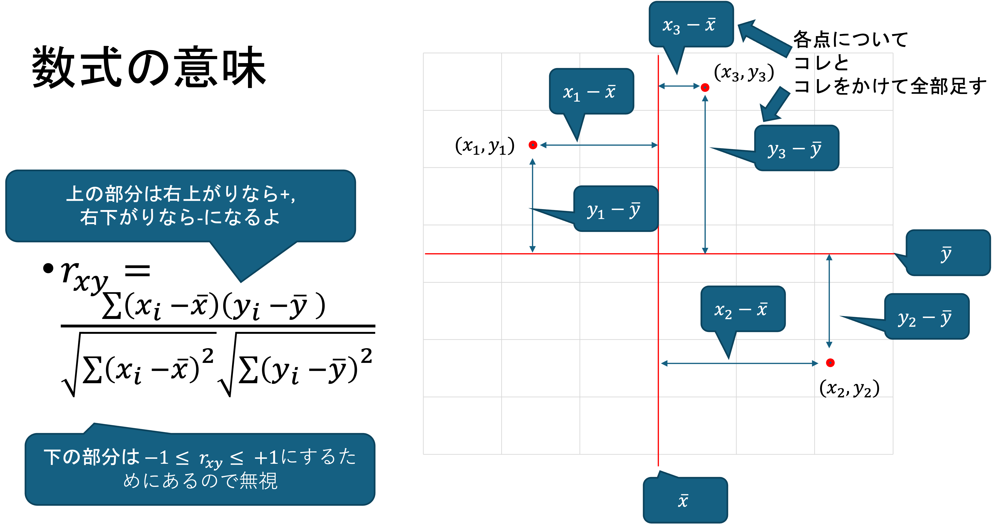
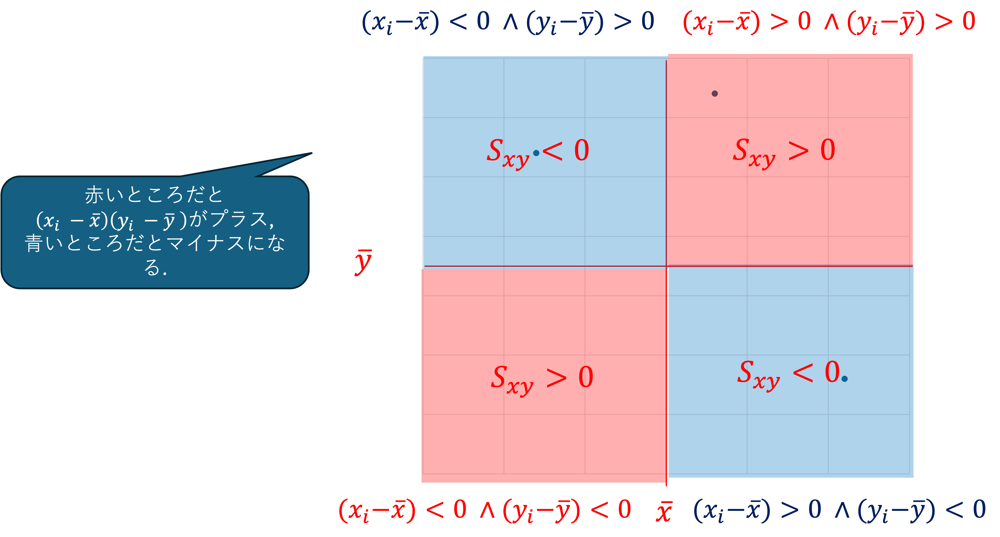
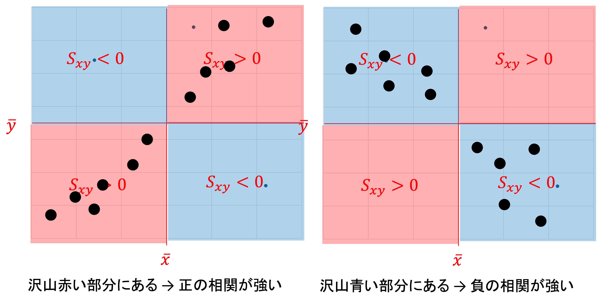
x_i, y_i を標準化し z_i = \frac{x_i - \bar{x}}{S_x}, w_i = \frac{y_i - \bar{y}}{S_y} とすると,
\begin{align*} r_{zw} &= \frac{1}{n} \sum z_i w_i \\ &= \frac{1}{n} \sum \left( \frac{x_i - \bar{x}}{S_x} \right) \left( \frac{y_i - \bar{y}}{S_y} \right) \\ &= \frac{\sum (x_i - \bar{x})(y_i - \bar{y})}{n S_x S_y} \\ &= r_{xy} \end{align*}
相関係数が -1 から 1 の範囲に収まることを示すために, \frac{1}{n} \sum (z_i \pm w_i)^2 を考えます.
\begin{align*} \frac{1}{n} \sum (z_i \pm w_i)^2 &\geq 0 \\ \frac{1}{n} \sum (z_i^2 \pm 2z_i w_i + w_i^2) &\geq 0 \\ \frac{1}{n} \sum z_i^2 \pm \frac{2}{n} \sum z_i w_i + \frac{1}{n} \sum w_i^2 &\geq 0 \\ \frac{1}{n S_x^2} \sum (x_i - \bar{x})^2 \pm \frac{2}{n} \sum z_i w_i + \frac{1}{n S_y^2} \sum (y_i - \bar{y})^2 &\geq 0 \\ \frac{S_x^2}{S_x^2} \pm \frac{2}{n} \sum z_i w_i + \frac{S_y^2}{S_y^2} &\geq 0 \\ 1 \pm \frac{2}{n} \sum z_i w_i + 1 &\geq 0 \\ 2 (1 \pm r_{xy}) &\geq 0 \\ \therefore -1 \leq r_{xy} &\leq 1 \end{align*}
このように相関係数は常に -1 \leq r_{xy} \leq 1 を取ります.
また, c を c > 0 の定数として, すべての点で y_i = c x_i が成り立つとき, \bar{y} = c \bar{x} が成り立ち,
\begin{align*} S_y &= \sqrt{\frac{1}{n} \sum (y_i - \bar{y})^2} \\ &= \sqrt{\frac{1}{n} \sum (c x_i - c \bar{x})^2} \\ &= \sqrt{\frac{c^2}{n} \sum (x_i - \bar{x})^2} = c S_x \end{align*}
となります. したがって,
\begin{align*} r &= \frac{\frac{1}{n} \sum (x_i - \bar{x})(y_i - \bar{y})}{S_x \times S_y} \\ &= \frac{\frac{c}{n} \sum (x_i - \bar{x})^2}{S_x \times c S_x} \\ &= \frac{c S_x^2}{c S_x^2} = 1 \end{align*}
となり, 相関係数は 1 になります. また, c < 0 の場合は, S_y = |c| S_x = -c S_x より S_x \times S_y = -c S_x^2 となるので, -1 になります.
このように x_i と y_i が同じ比率で増減するとき,
- r_{xy} = 1 となり, 正の完全相関
- r_{xy} = -1 となり, 負の完全相関
といいます.
なお, 相関が「ある/ない」の目安は以下のようになっています.
| 相関係数 | 関連性の程度 |
|---|---|
| 0.0〜0.4, -0.4〜0.0 | ほとんど相関がない |
| 0.4〜0.7, -0.7〜-0.4 | 弱い相関がある |
| 0.7〜0.9, -0.9〜-0.7 | 強い相関がある |
| 0.9〜1.0, -1.0〜-0.9 | きわめて強い相関がある |
Python で積率相関係数を求めるには numpy の np.corrcoef(xのデータ,yのデータ) あるいは scipy.stats.pearsonr(xのデータ,yのデータ) を利用します. scipy がインストールされていない人は uv add scipy をしておきましょう.
import pandas as pd
import matplotlib.pyplot as plt
import matplotlib_fontja
import numpy as np
import scipy.stats as st
#データの読み込み
#データの位置を指定しよう
df = pd.read_csv('data/scatter.csv')
print(df)
#散布図のx軸を指定
x_column = 'AI'
#散布図のy軸を指定
y_column = 'Python'
x_value = df[x_column]
y_value = df[y_column]
plt.scatter(x_value, y_value)
plt.ylabel(y_column)
plt.xlabel(x_column)
plt.show()
# numpyで相関係数を求める
# 返り値が [[xとxの相関係数=1, xとyの相関係数]
# ,[yとxの相関係数, yとyの相関係数=1]]
# となっている
print(np.corrcoef(df[x_column],df[y_column]))
"""
[[1. 0.83281294]
[0.83281294 1. ]]
"""
print(np.corrcoef(df[x_column],df[y_column])[0][1])
# 0.8328129378961621
#scipy.stats.pearsonr でも計算可能
# 返り値が (相関係数, p値)の形に成っている
# p値の意味は「データ活用の統計学実践」で扱います.
r, p = st.pearsonr(df[x_column],df[y_column])
print(r) #0.832812937896162スピアマンの順位相関係数
積率相関係数は量的変数にしか利用できませんが, 質的変数のうち順序尺度データに関しては, スピアマンの順位相関係数 (rank correlation coefficient)が利用できます.
スピアマンの順位相関係数は, 順序尺度データを順位に変換して, 順位の間の相関係数を求めたものになります.
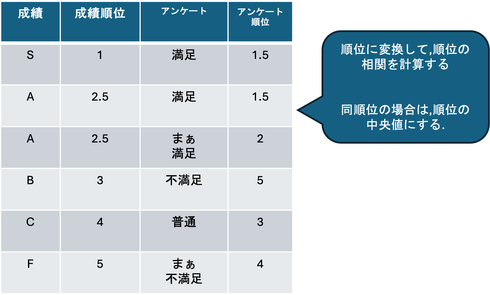
2 つの変数それぞれでデータを小さい順に並べ替えた順位を x_1, \dots, x_n と y_1, \dots, y_n とします (同じ順位は無いものとします). このとき,
r_{xy} = \frac{\frac{1}{n} \sum (x_i - \bar{x})(y_i - \bar{y})}{\sqrt{\frac{1}{n} \sum (x_i - \bar{x})^2} \sqrt{\frac{1}{n} \sum (y_i - \bar{y})^2}} がどのようになるかを考えます.
順位は 1 から n までの整数を並べ替えたものなので,
\sum x_i = \sum y_i = \frac{n(n+1)}{2}
\sum x_i^2 = \sum y_i^2 = \frac{1}{6} n(n+1)(2n+1)
\bar{x} = \bar{y} = \frac{\sum x_i}{n} = \frac{n(n+1)}{2n} = \frac{n+1}{2}
なので, 分子に関して,
\begin{align*} & \frac{1}{n}\sum(x_i - \bar{x})(y_i - \bar{y}) \\ &= \frac{1}{n}\sum \{x_iy_i - x_i \bar{y} - \bar{x}y_i + \bar{x}\bar{y}\} \\ &= \frac{1}{n}\sum x_i y_i - \frac{1}{n}\sum x_i\bar{y} - \frac{1}{n}\sum \bar{x}y_i + \frac{1}{n}\sum \bar{x}\bar{y} \\ &= \frac{1}{n}\sum x_i y_i - \frac{\bar{y}}{n}\sum x_i - \frac{\bar{x}}{n}\sum y_i + \bar{x}\bar{y} \\ &= \frac{1}{n}\sum x_i y_i - \bar{x}\bar{y} \\ &= \frac{1}{2n}\sum \{x_i^2 + y_i^2 - (x_i - y_i)^2\} - \bar{x}\bar{y} \\ \end{align*}
\begin{align*} \because (x_i - y_i)^2 = x_i^2 -2x_i y_i + y_i^2 \\ x_i y_i = \frac{1}{2} \{ x_i^2 + y_i^2 - (x_i - y_i)^2 \} \end{align*}
\begin{align*} & \frac{1}{2n}\sum \{x_i^2 + y_i^2 - (x_i - y_i)^2\} - \bar{x}\bar{y} \\ &= \frac{1}{2n}\sum x_i^2 + \frac{1}{2n}\sum y_i^2 - \frac{1}{2n}\sum (x_i - y_i)^2 - \bar{x}\bar{y} \\ & = \frac{1}{6} (n+1)(2n+1) - \frac{(n+1)^2}{4} - \frac{1}{2n}\sum (x_i - y_i)^2 \\ & = \frac{1}{12}(n+1)(n-1) - \frac{1}{2n}\sum (x_i - y_i)^2 \end{align*}
また, 分母に関して, \begin{align*} & \frac{1}{n}\sum (x_i - \bar{x})^2 \\ &= \frac{1}{n}\sum (x_i^2 - 2 x_i \bar{x} + \bar{x}^2) \\ &= \frac{1}{n} \{ \sum x_i^2 -2n \bar{x}^2 + n\bar{x}^2 \} \\ &= \frac{1}{n} \{\sum x_i^2 - n\bar{x}^2\} \\ &= \frac{1}{6}(n+1)(2n+1) - \frac{1}{4}(n+1)^2 \\ &= \frac{1}{12}(n+1)(n-1) \end{align*}
となります. y についての \frac{1}{n} \sum (y_i - \bar{y})^2 も同じ値になるので, これらを
r_{xy} = \frac{\frac{1}{n} \sum (x_i - \bar{x})(y_i - \bar{y})}{\sqrt{\frac{1}{n} \sum (x_i - \bar{x})^2} \sqrt{\frac{1}{n} \sum (y_i - \bar{y})^2}}
に代入して, \begin{align*} r_{xy} = \frac{\frac{1}{n} \sum (x_i - \bar{x})(y_i - \bar{y})}{\sqrt{\frac{1}{n} \sum (x_i - \bar{x})^2} \sqrt{\frac{1}{n} \sum (y_i - \bar{y})^2}} &= \frac{\frac{1}{12}(n+1)(n-1) - \frac{1}{2n} \sum (x_i - y_i)^2}{\frac{1}{12}(n+1)(n-1)}\\ &= 1 - \frac{6}{n^3 - n} \sum (x_i - y_i)^2 \end{align*}
となります.
スピアマンの順位相関係数は, Python では, scipy.stats.spearmanr(xのデータ,yのデータ) で求めることができます.
次のデータは, 国別 (A〜J) のサッカー (FIFA) と野球 (WBSC) のランキングのダミーデータです.
rank FIFA WBSC
0 1 A A
1 2 B E
2 3 C G
3 4 D I
4 5 E D
5 6 F C
6 7 G B
7 8 H F
8 9 I H
9 10 J Jこの 2 つのランキングの順位相関係数を求めてみましょう. データは順位ごとに国名が並んでいるので, 国 (A〜J) をキーにして FIFA の順位と WBSC の順位を対応させてから計算します.
df = pd.read_csv('data/spearman.csv')
#国(A~J)をキーにして,FIFA順位とWBSC順位を対応させる
fifa = df.set_index('FIFA')['rank']
wbsc = df.set_index('WBSC')['rank']
wbsc = wbsc.loc[fifa.index] #国の並び順を揃える
# scipyで順位相関係数を求める
correlation, pvalue = st.spearmanr(fifa, wbsc)
print("相関係数:",correlation) #0.45454545454545450.45 なので弱い正の相関があることが分かります.
相関係数のヒートマップ
相関係数はデータの関係を探るために便利な数値であり, 複数の観測項目からなるデータを扱う場合には, 最初に相関係数をとってそれぞれにどのような関係があるのかを確認するようにしましょう.
次のデータは, e-Stat (政府統計の総合窓口) から取得した, 都道府県別の身長, 体重, 食費, 睡眠の平均時間, スポーツの平均時間に関するデータです. 第3章で散布図行列を描いたデータと同じものです.
python coeff.py
pref height weight food sleep sports
0 北海道 170.4 63.7 65739 477 15
1 青森県 169.8 62.8 64889 490 13
2 岩手県 170.6 63.7 70156 489 13
3 宮城県 169.8 63.4 73337 482 15
4 秋田県 170.6 66.1 74560 493 14
5 山形県 170.9 63.9 76000 497 12
6 福島県 170.2 63.9 71074 480 13
7 茨城県 169.7 62.4 74341 467 17
8 栃木県 169.8 63.3 74387 472 16
9 群馬県 170.5 62.7 71701 475 15
10 埼玉県 170.4 61.1 76663 463 15
11 千葉県 170.3 62.4 77639 458 15
12 東京都 170.5 61.3 83506 461 16
13 神奈川県 170.9 62.5 77510 456 17
14 新潟県 170.9 62.0 75937 479 13
15 富山県 170.8 63.5 73589 471 15
16 石川県 170.8 62.9 76256 470 16
17 福井県 170.4 62.5 79478 476 14
18 山梨県 170.1 61.7 71294 481 16
19 長野県 169.5 61.0 72228 474 17
20 岐阜県 169.9 60.6 69527 469 13
21 静岡県 170.1 61.9 75833 474 19
22 愛知県 169.6 60.9 74694 463 14
23 三重県 170.4 62.1 75721 473 16
24 滋賀県 170.6 62.9 77978 470 18
25 京都府 170.5 62.0 76904 464 16
26 大阪府 170.2 62.2 74015 469 18
27 兵庫県 169.6 60.6 72847 466 15
28 奈良県 169.9 61.8 74888 461 18
29 和歌山県 170.0 62.6 69858 479 15
30 鳥取県 170.4 62.7 73321 475 14
31 島根県 169.7 60.7 72160 483 16
32 岡山県 169.6 61.7 69060 475 17
33 広島県 168.8 60.8 69061 473 15
34 山口県 169.2 60.2 69882 472 17
35 徳島県 169.9 64.4 67102 472 18
36 香川県 169.9 62.7 68400 469 18
37 愛媛県 168.8 61.8 67274 474 16
38 高知県 169.1 61.8 70188 484 16
39 福岡県 169.7 60.9 70135 471 14
40 佐賀県 169.2 62.2 68749 473 16
41 長崎県 170.1 63.3 66641 473 18
42 熊本県 169.5 61.8 66184 482 20
43 大分県 169.3 62.5 69255 479 18
44 宮崎県 168.7 61.8 65165 477 19
45 鹿児島県 169.7 61.4 65377 479 18
46 沖縄県 168.7 60.6 56298 482 20データの取得過程に興味がある人は, 以下の手順を自分で行い, データを作ってみましょう.
e-Stat のデータ表示機能を使ってデータを自分で作る (開く/閉じる)
e-Stat で都道府県別の身長, 体重, 睡眠時間等のデータを集めます. 地域別のデータは「地域」から選択できます.
「都道府県データ」を選択し, 「データ表示」をクリックします.
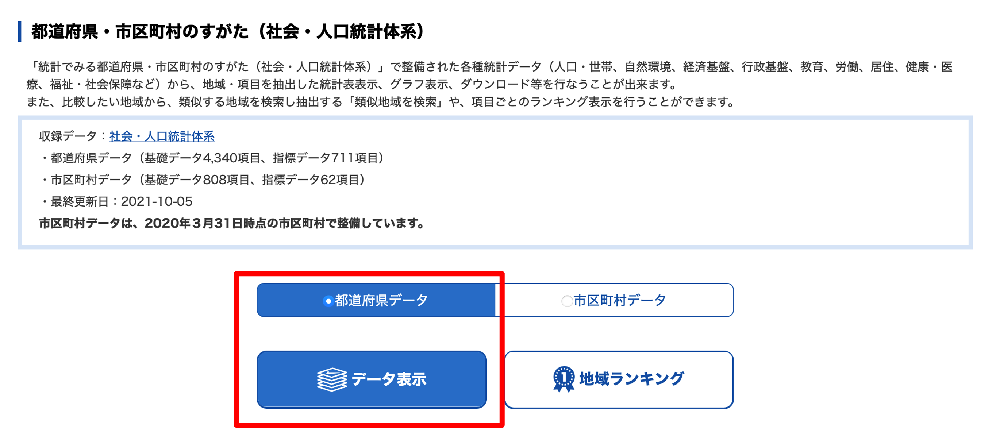
データを集める, 地域, 表示項目, 表示方法の順に選択します. 今回はすべての都道府県を利用するので, 「全て選択」をクリックしたあと「確定」をクリックします.
次に項目を決めます. 分野をクリックして「I 健康・医療」を選ぶと, 項目候補に健康・医療に関わる項目が表示されます. そこから,
- I411301_身長（高校2年）（男）【ｃｍ】
- I412301_体重（高校2年）（男）【ｋｇ】
を順番に選んで, 「項目を選択」をクリックします.
同様に, 「L 家計」から
- L421101_食料費（二人以上の世帯のうち勤労者世帯）（全国消費実態調査結果）【円】
「M 生活時間」から
- M1101_睡眠の平均時間（10歳以上）（男）【分】
- M360100_スポーツの平均時間（15歳以上）（男）【分】
を順番に選んで, 「項目を選択」をクリックします.
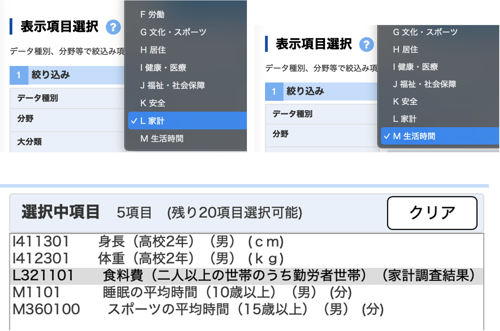
最後にどのデータを表示するかレイアウトを決めます.
- 調査年を列に配置
- 表示年度を 2000 から 2010 まで
- 設定して表示を更新
データをダウンロードします.
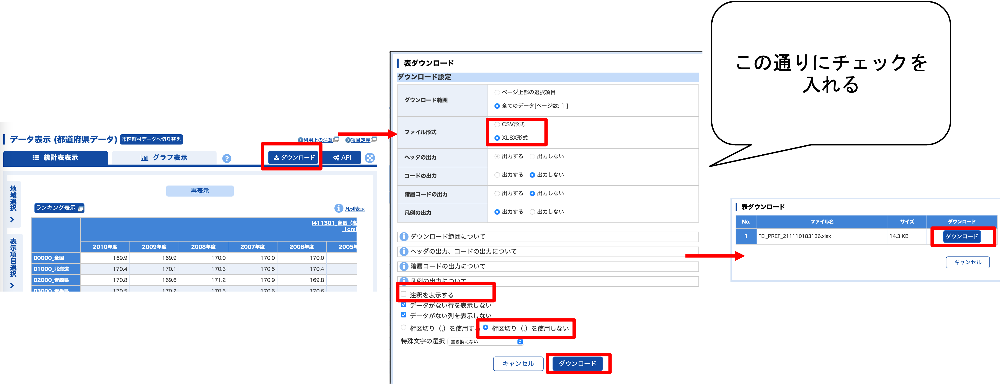
ダウンロードしたデータを読み込める csv に編集します.
- 2006 年以外の列を削除
- 数値として新しいシートにコピー
- ヘッダー名をつける
- 県名 pref (prefecture の略)
- 身長 height
- 体重 weight
- 食費 food
- 睡眠 sleep
- スポーツ sports
- utf-8 の csv で保存
- ファイル名: coeff_multi.csv
- 作業ディレクトリの data フォルダに保存
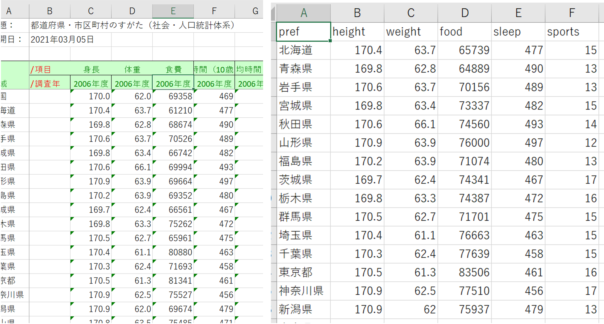
データのどの観測項目間に関連があるのかを確かめるために, 作成したデータのすべての組み合わせの相関係数を見てみましょう. 今までのように一つ一つ散布図を作成して, 相関係数を求めていると, \text{観測項目数} \times \text{観測項目数} のグラフを作成することになります. そこで, 与えられた観測項目すべての組み合わせで図示するペアプロットとヒートマップを活用してみます.
DataFrame に含まれるデータのペアプロットには, pandas の plotting モジュールを利用します. pd.plotting.scatter_matrix(ペアプロットを求めるDataFrame) で, 散布図のペアプロットが作成できます.
また, 各項目の相関係数も pandas の .corr() メソッドで取得することができます.
# CSVファイルを読み込んでデータフレームに格納
# dataフォルダを作成し,そこにデータを入れておきましょう
df = pd.read_csv('data/coeff_multi.csv')
# データの表示
print(df)
#分析するデータの選択
labels = ['height', 'weight', 'food', 'sports', 'sleep']
X = df[labels]
#散布図行列を作成してみる
pd.plotting.scatter_matrix(X, range_padding=0.2)
plt.show()
#相関係数の組み合わせを確認
print(X.corr())
#ヒートマップで確認
sns.heatmap(X.corr()
,vmax=1 #ヒートマップの最大値
,vmin=-1 #最小値
,center =0 #中心
,annot=True)
plt.show()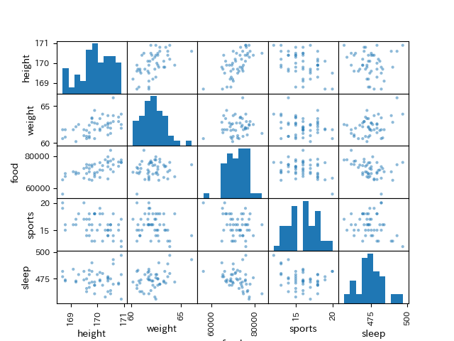
各項目の組み合わせごとに, 散布図が作成されています. 対角線上にはヒストグラムが作成されます.
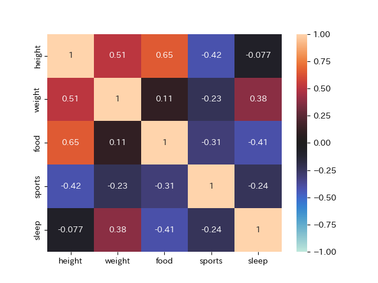
身長と食費 (0.65), 身長と体重 (0.51) に弱い正の相関があり, 食費と睡眠時間 (-0.41), 身長とスポーツの時間 (-0.42) に弱い負の相関があることが分かります. 一方, 食費と体重の相関係数は 0.11 で, ほとんど相関がありません. このように複数の観測項目から関係があるデータを探したい場合には, ペアプロットや, 相関係数のヒートマップを作成することで, 関係性がわかりやすくなります.
\chi^2 統計量
量的データには積率相関係数, 順位尺度データに対しては, 順位相関係数を求めることで 2 つのデータの関連性を確かめることができました. では, 名義尺度データの場合はどのようにすればよいのでしょうか.
名義尺度を含めた質的変数の関係性を可視化するには, 第3章で扱った同時度数分布表が利用できました. 数値化においても, 同時度数分布表を用いることができます.

質的変数間の関連度合いは, 同時度数分布表の数値を利用した ピアソンの \chi^2 統計量 (カイにじょうとうけいりょう)で表すことができます. 第3章では同時度数分布表から列相対度数を求めましたが, ここで使うのは相対度数ではなく度数です.
\chi_o^2 = \sum_{i=1}^{r} \sum_{j=1}^{c} \frac{(n_{ij} - E_{ij})^2}{E_{ij}} \quad (r: \text{行数},\ c: \text{列数})
ここで n_{ij} は i 行 j 列のセルの度数です. E_{ij} を期待度数といい, \frac{\text{行の合計} \times \text{列の合計}}{\text{総数}}, すなわち
E_{ij} = \frac{\sum_{l=1}^{c} n_{il} \times \sum_{k=1}^{r} n_{kj}}{\sum_{k=1}^{r}\sum_{l=1}^{c} n_{kl}}
で求められます.
この \chi_o^2 が大きいほど, 2 つの変数の間の関連が強いといえます. この値を利用して, 行と列のデータが独立であるかを検定する \chi^2 検定 (独立性の検定) を行うこともできます. \chi^2 検定は第13章の質問紙調査の分析で使います. ここでは, この値から 2 つのデータの関連の度合いを判断する方法を見ていきましょう.
\chi_o^2 の値は, 同時度数分布表の行数や列数に依存して値が変わるため, 相関係数のように, 「特定の値から関連があるといえる」といった利用法には適しません.
そこで, 異なるデータを比較するためには, 0 \leq V \leq 1 の値を取る, クラメールの連関係数 Vに変換します. n は総度数です.
V = \sqrt{\frac{\chi_o^2}{n \times \min(r - 1,c - 1)}}
クラメールの連関係数は, 相関係数よりも高い値が出にくいので, 以下のような基準で判断します.
| V | 判断 |
|---|---|
| 0〜0.1 | 関連なし |
| 0.1〜0.25 | 弱い関連がある |
| 0.25〜0.5 | 関連がある |
| 0.5〜1.0 | 強い関連がある |
\chi_o^2 は scipy.stats の chi2_contingency(度数分布表,correction=False) で求めることができます.
返り値は \chi_o^2, p 値, 自由度, 期待度数の 4 つです.
第3章で扱った, 時限と成績の関係を記録したデータを利用して, クラメールの連関係数 V を求めてみましょう.
Period Grade
0 2 B
1 5 A
2 4 A
3 3 C
4 1 C
.. ... ...
195 2 C
196 4 C
197 5 C
198 5 F
199 4 C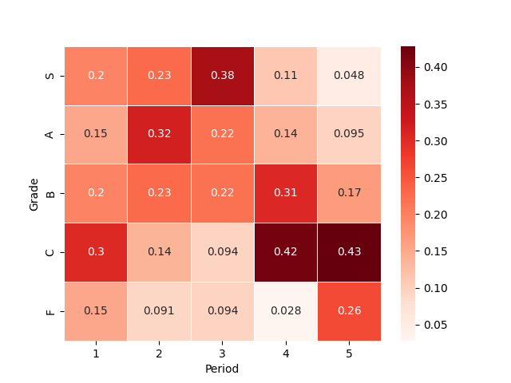
import pandas as pd
import matplotlib.pyplot as plt
import seaborn as sns
import scipy.stats as st
import numpy as np
df = pd.read_csv('data/cross_table_data.csv')
#クロス表(同時度数分布表)の作成
cross = pd.crosstab(df['Grade'],df['Period'])
#表示順の設定
cross = cross.reindex([1,2,3,4,5],axis='columns')
cross = cross.reindex(['S','A','B','C','F'],axis='index')
print(cross)
#可視化(第3章の復習): 列相対度数のヒートマップ
cross_rel = cross.copy()
for c in cross_rel.columns:
cross_rel[c] = cross_rel[c] / cross_rel[c].sum()
print(cross_rel)
sns.heatmap( cross_rel #ヒートマップを作成したいテーブル
, cmap=plt.get_cmap('Reds') #カラーマップ(省略可)
, linewidths=.5 #線の太さを指定することでセルを囲う線を表示
, annot=True #セルに数値を表示
)
plt.show()
#χ二乗統計量は相対度数ではなく度数の分布表から求める
x2, p, dof, e = st.chi2_contingency(cross,correction=False)
print(x2) #43.39273272653072
#クラメールの連関係数Vを求める
n = cross.sum().sum() #総度数 200
v = np.sqrt(x2/(n * min(cross.shape[0]-1,cross.shape[1] -1)))
print(v) #0.232896792395609クラメールの連関係数 V の値は約 0.23 となり, 弱い関連があることが分かりました.
因果関係と相関
相関関係は, 2 つの観測項目間の関係を表していますが, 観測項目 A の変化によって, 観測項目 B の変化が起きているという因果関係 (causality)を示しているものではありません.
「A が起きれば必ず B が起きる」という関係を, 決定論的な関係といいます.
- 例: 水を 1 気圧のもとで 100 ℃ まで熱すると, 沸騰する
論理学の「A ならば B (A \Rightarrow B)」(含意) を使うと, このような関係を「A が真なら B も真」と書けます. このとき, A を B の十分条件, B を A の必要条件といいます. ただし, 論理学の「ならば」は真と偽の組み合わせだけで決まり, A が B の原因かどうかは問いません. 例えば「人間ならば死ぬ」は正しい含意ですが, 人間であることが死の原因だと述べているわけではありません.
統計学で扱う因果関係は, 決定論的な関係では表せません. 例えば, 喫煙をすると肺がんになるという関係は, 喫煙をしても肺がんにならない人がいるので, 決定論的な関係ではありません. 統計学で扱う因果関係は, A が B の起きる確率を高める要因になっている, あるいは A によって B の一部が説明できることを表します. これを統計的因果関係といいます.
統計的因果関係が認められる条件は, 簡単には以下のように示されます.
A と B の間に明瞭な関係が認められる
A が時間的に, あるいは意味的に B より先行している
A と B の共通要因となりうる要因を統制して (影響を取り除いて) も, 両者に関係が見出される.
因果関係を示すには, 特に 3. の条件を確かめるために, A 以外の条件を揃えて B の発生確率を比べる対照実験などの手法を使います. この資料では実験は扱いません. A によって B を説明するという関係は, 第5章の回帰分析で扱います.
このように, 相関関係と因果関係は異なる概念として理解する必要があります.
例えば, 相関関係があっても因果関係がない有名な例として, チーズの消費量と, ベッドシーツに絡まって死ぬ人の数や, プールで溺れた人の数と, ニコラス・ケイジの映画出演数などがあります. Tyler Vigen のサイト Spurious Correlations に, こうした例がたくさんまとめられています.
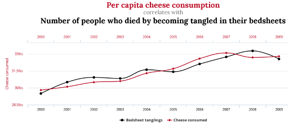
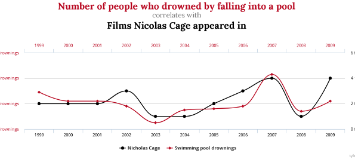
このように, まったく因果関係のないものでも現れる相関関係を偽相関 (Spurious Correlation)といいます.
反対に, x を 1 から 15 までの整数として y = (x-8)^2 とすると, y の値は完全に x によって決まるため, x と y の間に因果関係は認められますが, 相関係数は 0 になります. 相関係数が測るのは直線的な関係の強さだけであり, x = 8 を境に増減が入れ替わる関係は捉えられません.
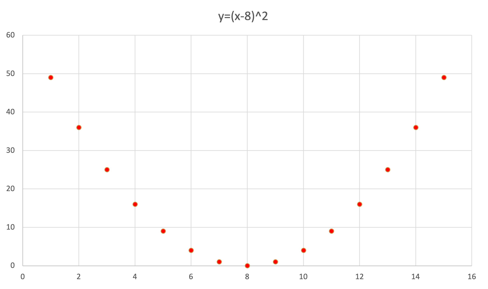
相関に似た概念として, 3 つ目の変数の影響を除いた相関を表す偏相関係数があります. 続く偏相関係数 (発展)で扱います.
この節に対応する演習は, 章末のExercise DSP4-2です.
偏相関係数 (発展)
因果関係と相関の条件 3. のように, 2 つの変数の関係を見るときには共通要因の影響を取り除く必要があります. 相関係数からその影響を取り除いたものが偏相関係数です.
偏相関係数 (partial correlation coefficient) は, 3 つの変数があるときに, 1 つの変数の影響を除いた残り 2 つの変数間の相関係数です.
変数 x, y, z があるとき, z の影響を除いた x, y の間の偏相関係数は以下のように求められます.
r_{xy \cdot z} = \frac{r_{xy} - r_{xz}r_{yz}}{\sqrt{1 - r_{xz}^2}\sqrt{1 - r_{yz}^2}}
分子では, x と y の相関係数から, z を介した相関 r_{xz}r_{yz} を引いています.
偏相関係数の具体例を見てみましょう. 次のデータは, 米国における x:小麦の1日あたりの消費量, y:米の一日あたりの消費量, z:肥満度 を表しています. なお, いずれの列も最大を 1, 最小を 0 に変換してあります.
この 3 変数の相関係数を取ってみます.
df = pd.read_csv('data/partial_coeff.csv', index_col=0)
x = df['x']
y = df['y']
z = df['z']
#散布図行列を作成してみる
pd.plotting.scatter_matrix(df, range_padding=0.2)
plt.savefig('partial_coeff_scatter_matrix.png')
plt.close()
#ヒートマップで確認
sns.heatmap(df.corr()
,vmax=1 #ヒートマップの最大値
,vmin=-1 #最小値
,center =0 #中心
,annot=True)
plt.savefig('partial_coeff_heatmap.png')
plt.close()
rxy = np.corrcoef(x, y)[0, 1]
rxz = np.corrcoef(x,z)[0, 1]
ryz = np.corrcoef(y,z)[0, 1]
print('x-y:',rxy) #x-y: -0.600168172831563
print('x-z:',rxz) #x-z: 0.800077754980739
print('y-z:',ryz) #y-z: -0.4740072261555344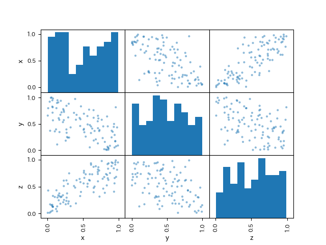
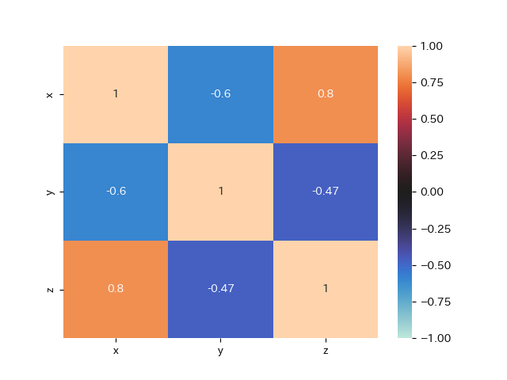
相関係数を見ると,
r_{xy} \approx -0.60: 小麦を食べる量が多いと米を食べる量が少ない
r_{xz} \approx 0.80: 小麦を食べる量が多いほど太っている
r_{yz} \approx -0.47: 米を食べる量が多いほど痩せている
となっています.
小麦を食べるほど米を食べる量が少ないという関係は, 米国では米を主食とする人が少なく, 普段小麦粉を利用した食事をしているほど米を食べる機会が少ない, ということで理解できます. また, 小麦を食べる量が多いほど太っているというのも, 炭水化物をたくさん食べるほど太っているということで理解できます. 一方で, 米を食べる量が多いほど痩せているという関係は, あまり自然ではありません.
これは, 一般的に小麦を食べる文化圏の人のほうが, アジア系よりも太っていることに影響されていそうです. y と z の散布図に x の値で色をつけて, x の影響を確認してみましょう.
plt.scatter(y,z,c=x)
plt.xlabel('米の消費量')
plt.ylabel('肥満度')
plt.xlim(-0.1,1.1)
plt.ylim(-0.1,1.1)
plt.grid()
plt.colorbar()
plt.title('ryz='+str(ryz)[:5])
plt.savefig('partial_coeff1.png')
plt.close()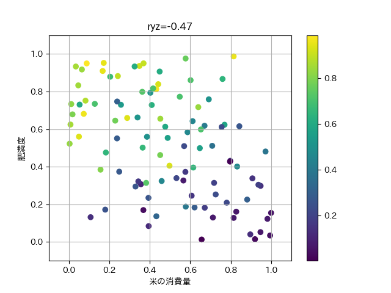
左上に行くほど x の値を表す色が明るくなっており, x の影響で r_{yz} が負の相関になっていることが分かります.
それでは, 小麦の影響を除いた米の肥満への影響 r_{yz \cdot x} を計算してみましょう.
\begin{align*} r_{yz \cdot x} &= \frac{r_{yz} - r_{xy}r_{xz}}{\sqrt{1 - r_{xy}^2}\sqrt{1 - r_{xz}^2}} \\ &\approx \frac{-0.47 + 0.6 \times 0.8}{\sqrt{1 - 0.6^2}\sqrt{1 - 0.8^2}} \\ &\approx 0.02 \end{align*}
Python でも計算してみます.
ryzx = (ryz - (rxy * rxz)) / (np.sqrt(1-rxy**2)*np.sqrt(1-rxz**2))
print('ryzx:',ryzx) #0.01286670673838738小麦の消費量の影響を除くと, 米の消費量と肥満度にはほとんど相関がないことが分かります.
最後に, x の影響を打ち消した y と z の関係をプロットしてみましょう. このコードは第5章で扱う回帰を利用しているので, 今の段階では理解できなくても問題ありません.
#xの影響を除いたyとzの散布図
from sklearn.linear_model import LinearRegression
#yとzのxによる回帰式をたてて,その残差をプロットすることで,
#xの効果を打ち消したyとzの関係を表現
model_y = LinearRegression().fit(df[['x']], y)
residual_y = y - model_y.predict(df[['x']])
model_z = LinearRegression().fit(df[['x']], z)
residual_z = z - model_z.predict(df[['x']])
plt.scatter(residual_y,residual_z,c=x)
plt.xlabel('米の消費量')
plt.ylabel('肥満度')
plt.grid()
plt.colorbar()
plt.title('ryz='+str(ryzx)[:5])
plt.savefig('partial_coeff2.png')
plt.close()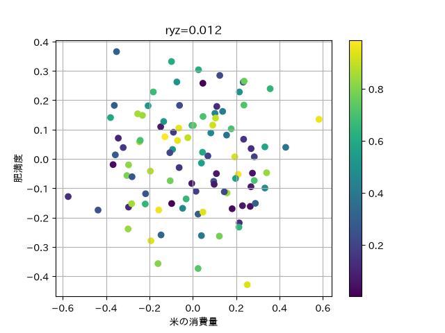
もとの y と z の散布図にあった x の影響が打ち消され, ほとんど相関がなくなっていることが分かります.
距離と類似度
相関係数は, 2 つの観測項目 (データフレームの列) がどれだけ連動するかを表しました. これに対して, 2 つの観測対象 (行) がどれだけ似ているかを表すのが距離と類似度です. 都道府県同士, 顧客同士, 文章同士のように, 観測対象を複数の項目の値の組として比べるときに使います. 第7章のクラスタリングは, この距離を使って似た観測対象を同じグループにまとめます.
ここでは, 第3章で散布図行列を描いた都道府県別のデータ (こちら) を使います. 各都道府県は, 平均身長 (height), 体重 (weight), 食費 (food), 睡眠時間 (sleep), 運動時間 (sports) の 5 つの値の組で表されます.
import numpy as np
import pandas as pd
from scipy.spatial import distance
df = pd.read_csv('data/pref_stats.csv', encoding='utf-8-sig', index_col='pref')
print(df.loc[['北海道', '東京都', '沖縄県']])
"""
height weight food sleep sports
pref
北海道 170.4 63.7 65739 477 15
東京都 170.5 61.3 83506 461 16
沖縄県 168.7 60.6 56298 482 20
"""ユークリッド距離
2 つの観測対象を m 個の項目の値の組 \boldsymbol{a} = (a_1, \dots, a_m), \boldsymbol{b} = (b_1, \dots, b_m) で表します. 項目ごとの差を 2 乗して足し, 平方根をとったものをユークリッド距離といいます.
- ユークリッド距離 (Euclidean distance)
d(\boldsymbol{a}, \boldsymbol{b}) = \sqrt{\sum_{j=1}^{m} (a_j - b_j)^2}
項目が 2 つなら, ユークリッド距離は散布図上の 2 点を結ぶ線分の長さ (三平方の定理) に一致します. 項目が 3 つ以上あっても同じ式で計算できます.
北海道と沖縄県の距離を, 式のとおりに計算した場合と scipy の関数を使った場合で比べてみましょう.
a = df.loc['北海道']
b = df.loc['沖縄県']
# 式のとおりに計算する
print(np.sqrt(((a - b) ** 2).sum()))
# scipy の関数で計算する
print(distance.euclidean(a, b))
"""
9441.003310030137
9441.003310030137
"""
# 項目ごとの差の2乗
print((a - b) ** 2)
"""
height 2.89
weight 9.61
food 89132481.00
sleep 25.00
sports 25.00
"""項目ごとの差の 2 乗を見ると, 距離のほとんどが食費の差で決まっています. 食費は円単位で数万の値をとり, 身長 (cm) や睡眠時間 (分) とは桁が違うためです. このまま計算した距離で似た都道府県を探すと, 食費が近い都道府県を探すのとほとんど変わりません.
標準化
項目ごとに単位と散らばりが違うときは, 各項目を標準化してから距離を計算します. 標準化は, 各値から項目の平均を引き, 項目の標準偏差で割る操作です (データの広がりを表す統計量で定義した標準偏差 S を使います. ピアソンの積率相関係数の説明で使った変換と同じものです).
- 標準化 (standardization)
z_i = \frac{x_i - \bar{x}}{S}
標準化した値は, 項目ごとに平均 0, 標準偏差 1 になり, 「その値が項目の平均から標準偏差いくつ分離れているか」を表します. 単位が消えるので, 身長の差と食費の差を同じ尺度で比べられます.
z = (df - df.mean()) / df.std(ddof=0)
print(z.loc[['北海道', '東京都', '沖縄県']].round(2))
"""
height weight food sleep sports
pref
北海道 0.74 1.25 -1.28 0.31 -0.48
東京都 0.91 -0.82 2.45 -1.55 0.03
沖縄県 -2.10 -1.42 -3.27 0.90 2.10
"""pandas の .std() は, 既定では n でなく n-1 で割った標準偏差を返します. 本章の定義 (n で割る) に合わせるには ddof=0 を指定します. どちらで割っても全項目が同じ比率で拡大・縮小されるだけなので, どの都道府県同士が近いかの順位は変わりません.
標準化したデータで北海道と沖縄県の距離を計算し直すと, 身長, 体重, 運動時間の差も距離に効くようになります.
print(distance.euclidean(z.loc['北海道'], z.loc['沖縄県']))
"""
5.114060111150499
"""
print(((z.loc['北海道'] - z.loc['沖縄県']) ** 2).round(2))
"""
height 8.09
weight 7.14
food 3.94
sleep 0.34
sports 6.65
"""北海道から他の都道府県までの距離を計算し, 近い順に並べてみます.
dist = z.apply(lambda row: distance.euclidean(z.loc['北海道'], row), axis=1)
print(dist.sort_values().round(2))
"""
pref
北海道 0.00
和歌山県 1.47
群馬県 1.55
福島県 1.61
...
山口県 3.91
東京都 4.69
沖縄県 5.11
"""北海道に最も近いのは和歌山県で, 地理的に隣り合う都道府県が近いとは限りません. ここでの距離は選んだ 5 項目だけで測っているので, 「この 5 項目の値の組が似ている」という意味の近さです. どの項目を使うかによって, 何と何が近いかは変わります.
コサイン類似度
ユークリッド距離は値そのものの差を測ります. これに対してコサイン類似度は, 値の組を原点から伸びる矢印 (ベクトル) と見て, 2 本の矢印の向きがどれだけ揃っているかを測ります.
- コサイン類似度 (cosine similarity)
\cos(\boldsymbol{a}, \boldsymbol{b}) = \frac{\sum_{j=1}^{m} a_j b_j}{\sqrt{\sum_{j=1}^{m} a_j^2} \sqrt{\sum_{j=1}^{m} b_j^2}}
コサイン類似度は -1 から 1 の値をとり, 1 なら同じ向き, 0 なら直交, -1 なら逆向きです. 1 からコサイン類似度を引いた値をコサイン距離と呼びます.
標準化したデータでは, 矢印の向きは「どの項目が平均より大きく, どの項目が平均より小さいか」の組み合わせを表します.
def cos_sim(a, b):
return np.dot(a, b) / (np.linalg.norm(a) * np.linalg.norm(b))
for p in ['青森県', '沖縄県', '東京都']:
print(p, round(cos_sim(z.loc['北海道'], z.loc[p]), 2))
"""
青森県 0.62
沖縄県 0.01
東京都 -0.63
"""北海道は体重が平均より大きく, 食費が平均より小さく, 睡眠時間が平均より長い都道府県です. 東京都はこの 3 項目がすべて逆なので, コサイン類似度が負になります.
コサイン類似度は矢印の長さ (値の大きさ) を無視します. そのため, 単語の出現回数のように, 長い文章ほど全体の値が大きくなるデータを比べるのに向いています. 第10章では, 文章をベクトルに変換してコサイン類似度で比べます.
演習
Exercise DSP4-1
基本統計量を求める関数とヒストグラムのデータの基本統計量
対応する節: 中心を表す基本統計量, データの広がりを表す統計量
- 数値のリストを受け取り, 算術平均, 幾何平均, 調和平均, 中央値, 標本標準偏差 (n で割る標準偏差) をそれぞれ返す関数を,
pandasやnumpyの統計量の関数を使わずに作成してください. 本文の例 (165, 171, 189 の算術平均, 売上の前年比の幾何平均, 60 km/h と 30 km/h の調和平均,[3,4,7,9,11,12,15]と[4,5,6,10,14,17]の中央値,[9,6,12,18,10]の標準偏差) で結果を確かめてください. - 章の冒頭のヒストグラムのデータについて, 列ごとの算術平均, 中央値, 最頻階級 (値の範囲を 10 の区間に分けたとき), 標本分散, 標本標準偏差を求めてください.
提出ファイル名: dsp4-1.py
回答例
import pandas as pd
# 問1
def arith_mean(xs):
return sum(xs) / len(xs)
def geo_mean(xs):
prod = 1
for x in xs:
prod = prod * x
return prod ** (1 / len(xs))
def harm_mean(xs):
return len(xs) / sum(1 / x for x in xs)
def median(xs):
s = sorted(xs)
n = len(s)
return (s[(n - 1) // 2] + s[n // 2]) / 2
def sample_std(xs):
m = arith_mean(xs)
return (sum((x - m) ** 2 for x in xs) / len(xs)) ** 0.5
print(arith_mean([165, 171, 189]))
print(geo_mean([350/300, 600/350, 1000/600]))
print(harm_mean([60, 30]))
print(median([3, 4, 7, 9, 11, 12, 15]))
print(median([4, 5, 6, 10, 14, 17]))
print(sample_std([9, 6, 12, 18, 10]))
"""
175.0
1.4938015821857216
40.0
9.0
8.0
4.0
"""
# 問2
df = pd.read_csv('data/histogram_A_B_data.csv')
for c in df.columns:
print(c)
print('算術平均:', df[c].mean())
print('中央値:', df[c].median())
freq = df[c].value_counts(bins=10, sort=False)
print('最頻階級:', freq.idxmax())
print('標本分散:', df[c].var(ddof=0))
print('標本標準偏差:', df[c].std(ddof=0))
"""
Histogram_A
算術平均: 60.28998083741
中央値: 60.37950918
最頻階級: (53.945, 64.586]
標本分散: 215.52862269245915
標本標準偏差: 14.680893116307985
Histogram_B
算術平均: 50.708362372379995
中央値: 50.630771325
最頻階級: (45.13, 51.264]
標本分散: 99.39203194350507
標本標準偏差: 9.969555253044394
"""A は B より平均が約 9.6 大きく, 標準偏差は B の約 1.5 倍です. 章の冒頭のヒストグラムで A の中心が右にあり散らばりが大きく見えたことを, 数値で言い表せます.
Exercise DSP4-2
都道府県別データの相関係数と散布図の解釈
対応する節: ピアソンの積率相関係数, 相関係数のヒートマップ, 因果関係と相関
相関係数のヒートマップで使った都道府県別のデータについて, 次の問いに答えてください.
- 食費 (
food) と睡眠時間 (sleep) のピアソンの積率相関係数を,np.corrcoefとscipy.stats.pearsonrの両方で求めてください. - 横軸を食費, 縦軸を睡眠時間とする散布図を, 各点に都道府県名を添えて描いてください. 散布図から読み取れることと相関係数の値を合わせて, 2 つの変数の関係を解釈してください.
- 食費が他の都道府県から大きく離れている沖縄県を除いて相関係数を求め直し, 問 1 の値と比べてください.
- 「食費が多いと睡眠時間が短くなる」といえるかを, 因果関係と相関の内容をもとに説明してください.
提出ファイル名: dsp4-2.py
回答例
import pandas as pd
import numpy as np
import scipy.stats as st
import matplotlib.pyplot as plt
import matplotlib_fontja
df = pd.read_csv('data/coeff_multi.csv', encoding='utf-8-sig')
# 問1: 食費と睡眠時間の相関係数
print(np.corrcoef(df['food'], df['sleep'])[0][1])
r, p = st.pearsonr(df['food'], df['sleep'])
print(r)
"""
-0.40822961572269567
-0.4082296157226958
"""
# 問2: 散布図に都道府県名を添える
plt.scatter(df['food'], df['sleep'])
for i in df.index:
plt.annotate(df.loc[i, 'pref'], (df.loc[i, 'food'], df.loc[i, 'sleep']), fontsize=7)
plt.xlabel('食費 (円)')
plt.ylabel('睡眠時間 (分)')
plt.show()
# 問3: 沖縄県を除いた相関係数
df2 = df[df['pref'] != '沖縄県']
print(np.corrcoef(df2['food'], df2['sleep'])[0][1])
"""
-0.3966182673912843
"""- 相関係数は約 -0.41 で, 目安の表では弱い負の相関にあたります. 2 つの関数の結果は, 計算誤差の範囲で一致します.
- 散布図では, 東京都, 神奈川県, 千葉県, 埼玉県など大都市圏の都道府県が右下 (食費が多く睡眠時間が短い) に, 山形県, 秋田県, 青森県, 岩手県など東北の県が上側 (睡眠時間が長い) に集まっています. 右下がりの傾向はあるものの, 点は直線から大きく散らばっており, 相関係数が -0.41 にとどまることと合っています.
- 沖縄県を除くと約 -0.40 になり, ほとんど変わりません. 沖縄県は食費が極端に少ない一方, 睡眠時間は全体の中ほどにあるため, 相関係数への影響は小さくなっています.
- いえません. 相関係数は, 食費の多い都道府県ほど睡眠時間が短い傾向を表すだけです. 大都市圏であること (所得や物価の高さ, 通勤時間の長さなど) が食費と睡眠時間の両方に影響する共通要因になっている可能性があり, その影響を取り除かない限り, 食費が睡眠時間を短くするという因果関係は主張できません.